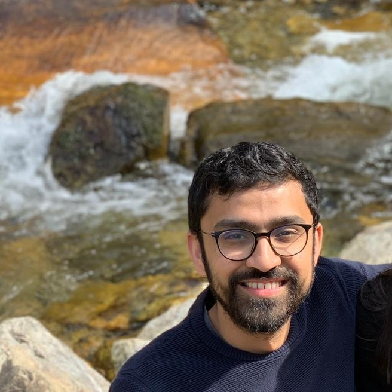

About Me
My name is Parth Parmar and the best way to describe myself is a student of life. I love to learn new things and take on new challenges. Having a Bachelors in Mechanical Engineering from Clemson University has giving the great skill of how to learn and learn fast. Over the years I have taught myself lots of different skills and acquired knowledge on a wide array of fields like: subtractive manufacturing (turning, milling, grinding, honing, wire EDM, sinker EDM, forming, etc.), additive manufacturing / 3D printing (FDM, SLS, SLA, DLSM, Muli Jet, Poly Jet and Binder Jet), quality systems, lean strategies, and many more.
My latest area of focus / learning is the in web development, to be specific, full-stack web development. In college I learned how to create programs by writing code in Matlab and instantly saw the benefits of coding. I believe coding like the English language will be a must have as a professional skill set. Next I dove into VBA to automate business processes at my first two jobs, specifically in Excel and Access. Currently I am taking a full-stack web development bootcamp class at UNC and learning the challenging skills required to deploy a dynamic website.
“live as if you were to die tomorrow. Learn as if you were to live forever”
– Mahatma Gandhi